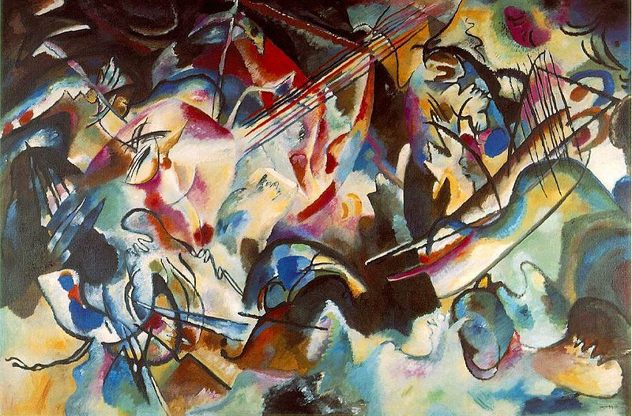

Synesthésie et matérialisation du son en art
La synesthésie se caractérise par une liaison inhabituelle dans le cerveau, qui provoque la stimulation d’un sens en réaction à la stimulation d’un autre sens. Certains artistes synesthètes l'utilisent dans leurs créations sonores ou pour matérialiser le son. Comment influe-t-elle sur la création artistique à l’heure du digital ?
La synesthésie, c’est quoi ?
Le terme “Synesthète” apparaît à la fin du XIXème siècle. Il désigne une condition neurologique selon laquelle deux ou plusieurs sens sont associés. On parle également de fusion de sens : une expérimentation involontaire de sensations dans des modalités sensorielles inattendues lors de laquelle un autre sens se retrouve indirectement stimulé. Il existe de nombreuses formes de synesthésie : chromestésie (son-couleur/forme), spatio-temporelle, lexico-gustative (mots -goût), personnification… Il y aurait 152 formes de synesthésie différentes, mais la plus connue, et celle qui nous intéressera ici, est celle qui associe des concepts, sons ou objets à des visions de couleurs et de formes. Nous étudierons ici la synesthésie “son-couleur” ou “audition colorée” : la sensation de vision de couleur et de formes à lécoute de sons ou de musique. Ce phénomène concernerait, selon les estimations, environ 4% de la population (1 personne sur 23), avec des formes plus ou moins importantes.
Certaines personnes pensent être atteintes de synesthésie mais procèdent en réalité par associations d’idées. On parle alors de pseudo-synesthésie. La synesthésie s’impose à notre esprit, elle est constamment là et n’est pas contrôlable.
Synesthésie et neuroscience
Le premier cas de synesthésie est décrit en 1710 par Thomas Woolhouse. Un de ses patients aveugle décrivait des couleurs qu’il percevait à l’écoute de certains sons.
La synesthésie est étudiée depuis le XIXème siècle comme un phénomène neurologique. Elle n’est pas considérée comme une maladie ou un handicap d’un point de vue médical. Le phénomène est reconnu par les neurosciences, surtout depuis l’arrivée de l’imagerie par résonance magnétique (IRM).
Selon le consensus scientifique, toute région cérébrale peut être reliée à n’importe quelle autre. De là, provient l’hypothèse d’activation croisée. Ramachandran et Hubbard décrivent dans “Cross Wiring and the Neural Basis of Synesthesia" décrivent des “erreurs de câblage" au niveau cérébrale, activant des zones habituellement insensibles à certains stimulis. Ainsi une stimulation auditive, qui n’active habituellement que l’aire auditive, va également activer l’aire visuelle du cerveau, créant un lien entre ces deux sens, et mélangeant les signaux provenant de ces deux sens.
Plusieurs cas de synesthésie ont déjà été constatés au sein d’une même famille, amenant l'hypothèse d'une cause génétique et héréditaire. Son apparition a également été constatée de manière pathologique, avec la présence de tumeur ou de lésion cérébrale. L'usage de certaines drogues telles que le LSD ou la mescaline provoque des activités cérébrales similaires. Dans ce cas, les molécules ingérées interagissent avec l’activité et les transmissions neuronales, amplifiant ainsi la réponse sensorielle et provoquant des hallucinations ou une confusion des sens.
Synesthésie et mémoire
Une des explications possibles de la synesthésie est que les personnes synesthètes revivent des souvenirs d’enfance, par exemple en associant une note de musique au jouet coloré qui produisait cette même note lorsqu’iel était petit.e, ou les couleurs aux lettres colorées avec lesquelles iel jouait. Cette explication n’est pas prouvée et n’explique en rien comment l’association se construit définitivement dans le cerveau de l’adulte.
Il n’est pas rare de confondre synesthésie et simple association d’idées. Si on demande à une personne non-synesthète d’écouter une note et de lui donner une couleur, sa réponse ne sera pas forcément automatique et spontanée, et en répétant l’expérience avec parfois plus d’un an d’écart on remarque que la réponse n’est pas constante (seulement 30% des non-synesthètes ont des réponses constantes sur une longue période de temps). Un.e synesthète son-couleur n’a pas de contrôle sur l’apparition des couleurs dans son esprit à chaque fois qu’iel entend un son, et cette couleur est en générale immuable : les réponses des synesthètes sont constantes 90% du temps sur la même expérience.
Plusieurs autres expériences ont démontré qu’il y a une réelle différence entre la synesthésie et l’association d’idées. Par exemple, sur une page remplie de 5, un synesthète graphème-couleur* sera beaucoup plus rapide pour trouver le 2 caché, car celui-ci apparaîtra d’une couleur différente, même si l’encre utilisée est noir. De même, s’il voit un chiffre flou dans sa périphérie visuelle, il peut ne pas réussir à le déchiffrer mais réussir à savoir quel chiffre est écrit, car même dans sa périphérie le chiffre apparaît dans une couleur précise. Cela montre que le phénomène d’association est inconscient et profondément ancré.
Par conséquent, le fait d’avoir deux ou plusieurs sens stimulés en même temps augmenterait la capacité de mémorisation du synesthète. On peut citer Clément Bonpoil qui détient depuis 2016 le record de France du maximum de décimal de pi mémorisées et récitées le plus rapidement possible, avec 600 décimales récitées en 2 minutes et 8 secondes. Le jeune homme devenu humoriste est synesthète : dans un entretien avec le youtubeur Fabien Olicard, il explique qu’il a retenu les décimales en les relisant plusieurs fois, ce qui provoque en lui différentes sensations que son cerveau a retenu. A cause de cette technique de mémorisation, il est capable de les réciter très rapidement, puisque les sensations s’enchaînent rapidement, mais il est incapable de les écrire car sa main n’est pas aussi rapide que les enchaînements de sensation associées aux chiffres.
La synesthésie n’est ni une maladie, ni liée à une pathologie mentale, mais affecte directement la perception du monde. Elle peut être à la fois un avantage, offrant de meilleures facultés de mémorisation, ou poser problème à cause d’une trop forte sensibilité.
*qui voit les lettres et les chiffres colorés
Synesthésie et art sonore : matérialisation du son
La synesthésie apporte une manière différente de voir le monde qui nous entoure. Grâce à la dimension émotionnelle qu’elle englobe, et au lien qu’elle établit dans certains cas entre “audio” et “visuel”, elle a tout pour devenir une source d’inspiration ou un concept artistique.
La « synesthésie dans l'art » peut se référer à trois définitions distinctes :
- L'art fait par des synesthètes, dans lesquels ils utilisent leur propre expérience synesthésique pour créer des œuvres d'art.
- L'art fait par des non-synesthètes, qui tentent de représenter ce à quoi doit ressembler une synesthésie véritable.
- L'art supposé évoquer des associations synesthésiques chez une audience composée de non-synesthètes.
On retrouve la synesthésie dans la création artistique principalement à partir du XXème siècle. Mais on la retrouve dès 1734, avec le “color-organ” ou “Clavecin oculaire” de Louis Bertrand Castel, instrument destiné à accompagner la musique par des couleurs et des lumières. Il reprend la théorie de Sir Isaac Newton à propos d’une analogie entre spectre des couleurs et échelle musicale. Cet instrument inaugura la tradition de la "Visual Music” ou “Musique Visuelle”.
Caricature du clavecin oculaire de Louis-Bertrand Castel's, par Charles Germain de Saint Aubin
L’idée d’analogie musicale est apparue en peinture à la fin du XIXème et a été plus largement exploitée pendant le XXème siècle. Les peintres abstraits “composent” leurs oeuvres comme des oeuvres musicales. Kandinsky est l’un des piliers de ce mouvement, il peint des “Compositions”, des “Improvisations”. Il est influencé par le son des instruments, il associe couleurs et timbres, couleurs et tonalités. On parle d’ailleurs parfois en musique de “couleur” pour parler du ressenti.
Composition VI - Vassily Kandinsky, 1913
Cette recherche se perpétuera à travers d’autres formes artistiques, comme le cinéma abstrait ou les Light-shows psychédéliques des années soixantes.
Les artistes cherchent à figurer l’invisible, comme avec certaines formes de synesthésie. Billie Eilish explique comme elle “voit” sa musique et comment elle la compose : “Quand je crée, je pense à la vidéo, l'œuvre d’art, les couleurs qu’on va ressentir, son apparence, et la façon dont elle sera perçue. Je commence par visualiser, je pense d’abord à la couleur et à la texture, au nombre, au jour de la semaine […]”. Elle visualise ce qui est invisible pour les autres, et le retranscrit avec des sons.
Le domaine numérique (lié aux écrans) exploite encore aujourd’hui cette vision. Les arts numériques, alliés à la technologie de réalité virtuelle permettent de représenter concrètement les phénomènes de synesthésie aux non-synesthètes.
Kaitlyn Hova est violoniste professionnelle. Elle présente dans des vidéos sa vision synesthésique de la musique. Cela se manifeste par des halos colorés, de différentes tailles et couleurs selon les notes, le volume et le timbre.
De la synesthésie dans les films Disney ?
On retrouve le thème de la synesthésie dans le film Ratatouille : en goûtant tantôt de la fraise, tantôt du fromage, cela déclenche chez le personnage principal une apparition de formes colorées animées, associées à de la musique. La synesthésie du personnage est déclenchée ici par le goût, synesthésie qui est plus rare que celles son-couleur ou graphème-couleur.
Bien que le film n’ait pas été, à priori, fait par des synesthètes, la représentation de la musique est le thème principal de Fantasia. Le film, produit du rêve de Walt Disney d’associer animation pour enfant et musique classique, est une symbiose parfaite entre le son et l’image. Il y a 3 types de musique dans Fantasia : la musique qui avait pour but de raconter une histoire, celle qui, sans avoir de thèmes spécifiques, inspire des images plus ou moins précises, et enfin la musique qui existe uniquement en tant que telle.
Le premier morceau du film, Toccata et fugue en Ré Mineur de Bach, est de ce troisième type : le compositeur n’ayant pas cherché à représenter quelque chose en particulier, l’animation qui y est associée est une animation très abstraite, supposée représenter ce qui pourrait venir à l’esprit des spectateurs en écoutant la pièce.
Dans un premier temps, l’animation associe des couleurs aux différents pupitres et timbres de son par des jeux de lumière sur l’orchestre. Ce code couleur sera conservé dans la suite du morceau.
L’animation devient ensuite plus abstraite. Sur un fond nuageux dont la couleur varie, des formes fines et longues rappelant l’archer des violonistes se déplacent au rythme des vrais violons de la pièce, soit en à-coup, soit en formant de jolies vagues. Les sons plus graves sont représentés vers le bas par des formes épaisses, les plus aigus sont des formes fines situées vers le haut, chose que l’on retrouve déjà dans la représentation de sa synesthésie de Kaitlyn Hova. Les instruments à vent (flûtes, hautbois ?) sont représentés par des formes plus arrondies avec toujours un déplacement très fluide, du bas vers le haut si le son devient plus aigu et inversement. La superposition de nombreux instruments prend la forme d’étoiles ou de multitudes de lumières qui s’allument et s’éteignent rapidement.
Bien que la création de Fantasia fonctionne par association d’idées et non par synesthésie, ce morceau pourrait parfaitement être un exemple de ce que voit un synesthète à l’écoute de ce morceau.
De plus, une étude a été menée sur des synesthètes pour voir quelles couleurs ils voyaient le plus souvent pour chaque note, accord ou ton. Les résultats de ce test ont été comparés aux couleurs apparaissant au début de l’animation de la Symphonie Pastorale dans Fantasia : ainsi, bien que l’image ne bouge pas, les transitions de couleurs (dues au lever du soleil dans l’animation) correspondent à la transition de ton dans le morceau.
Le fait que l’association d’idées lors de projets comme Fantasia fonctionne si bien, même si le film n’est pas fait par des synesthètes, semble confirmer la théorie selon laquelle tous les enfants sont synesthètes : le principe de l’association d’idées serait alors basé sur une mémoire profonde héritée de l’enfance, mémoire qui continue de se manifester de manière continue chez les synesthètes.
Conclusion
La synesthésie est un domaine encore peu exploré et inexpliqué, qui a un impact important sur la perception du monde et la mémoire de l’individu synesthète. Son existence ouvre le champ des possibilités de notre cerveau, des techniques de mémorisation et de la création. En étudiant la synesthésie, nous pourrions donc en apprendre énormément sur nous-même.
Sources
- Document de conférence de D. Cai, S. Goto, T. Shinohara, N. Nagata, J. Kurumisawa, et A. Fukumoto, “Synesthetic Color Scheme in Fantasia”, ResearchGate, publié en Janvier 2010 : https://www.researchgate.net/publication/220721950_Synesthetic_color_scheme_in_Fantasia
- Conférence de Annie Dickinson, “Seeing Sound: How Synesthesia Can Change Our Thinking”, TEDx Talks, publiée le 15/08/2017 : https://www.youtube.com/watch?v=88s6guf9egs&t=1s
- Conférence de Wesley Trisnadi, “Synesthesia: The “disorder” that truly is an EXTRAorder.”, TEDx Talks, publiée le 22/03/2018 : https://www.youtube.com/watch?v=3bQUiQj8k6c
- Article de Edward M. Hubbard, “L’étrange monde de la synesthésie”, Institut français de l’éducation, dernière modification le 19/09/2017 : http://acces.ens-lyon.fr/acces/thematiques/neurosciences/actualisation-des-connaissances/memoire-attention-et-apprentissage/neuros_apprentissage/association_perceptives
- Vidéo de Fabien Olicard avec Clément Bonpoil, “Comment fonctionne la synesthésie”, chaîne Youtube de Fabien Olicard, publiée le 03/10/2016 https://www.youtube.com/watch?v=etAd0CTDdoM
- Extrait du film “Ratatouilles”, sorti en 2007 https://youtu.be/rLXYILcRoPQ
- Extrait du film “Fantasia”, sorti en 1940
- Article de Charlotte BOISSELIER “Synesthésie et matérialisation du son en art à l'ère du numérique”, 2017
- Vidéo “Billie Eilish - A Snippet into Billie's Mind (Artist Spotlight Stories)” publiée sur la chaine Youtube de Billie Eilish, 20/05/2019 https://youtu.be/kOIVaJgv5zE
- Vidéo “Hearing Color, Seeing Sound. This Is Synesthesia. (360 Video)” publiée sur la chaine de Seeker VR, 20/09/2016 https://youtu.be/_EyPXmy7R9s